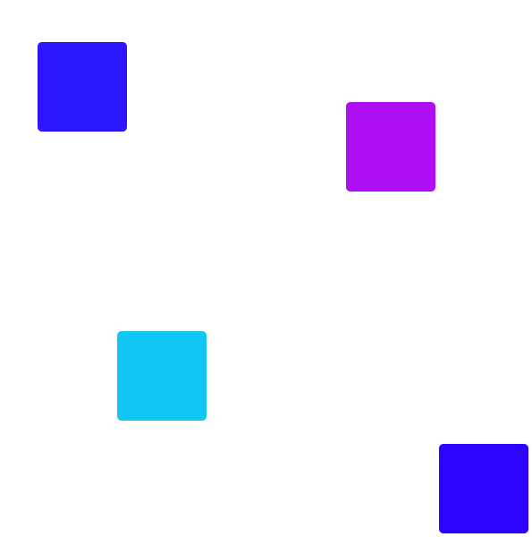
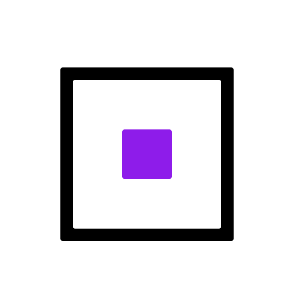

Spel 1
Endast tillgänglig i desktop-vy.
Spel 2
Målet är att rensa bort alla fyrkanter. För att rensa bort dem så klickar man på dem. För att spela igen så behöver sidan uppdateras.
Spel 3
Samma princip som i det andra spelet. Skillnaden är att fyrkanterna rör sig snabbare. Även här behöver sidan uppdateras för att börja om spelet.
Spel 4
Samma princip som i det andra och tredje spelet fast med en skillnad. En av fyrkanterna är en fälla, och om spelaren trycker på denna så förloran hen spelet. Sidan behöver uppdateras för att spela igen.
